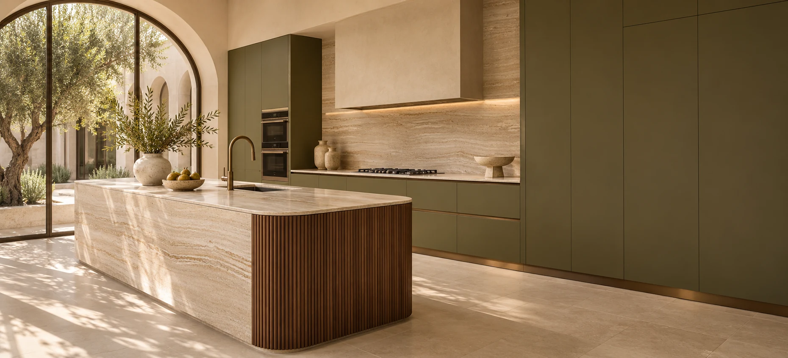
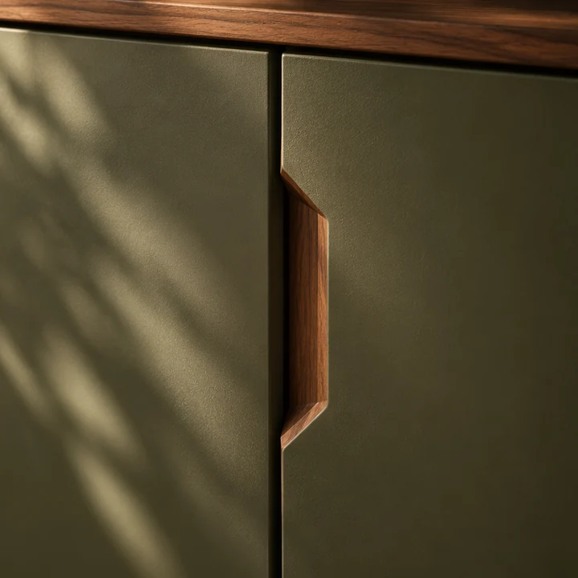
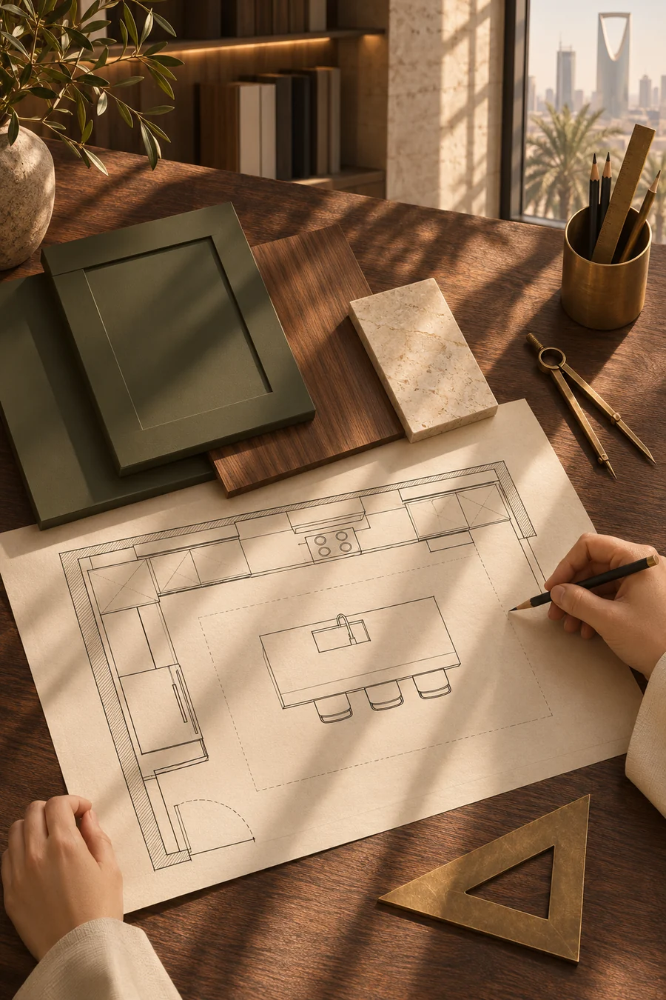

التصاميم
١٧ تصورًا تجمع خمسة توزيعات، من المطبخ المستقيم إلى المطبخ المفتوح بجزيرة.
مطابخ في الرياض
نبدأ بقياس المساحة وتخطيط الخزائن والأجهزة، ثم نراجع الخامات معك قبل التصنيع والتركيب.

قارن التوزيعات أولًا، ثم اختر الواجهات والأسطح التي تناسب الاستخدام اليومي.
١٧ تصورًا تجمع خمسة توزيعات، من المطبخ المستقيم إلى المطبخ المفتوح بجزيرة.

واجهات الخزائن، وأسطح العمل، وتجهيزات التخزين.
قارن بين العمل على جدار واحد، والوحدات المتقابلة، والجزيرة. يوضح لك الدليل ما يستحق المراجعة عند قياس الممرات وتحديد مواقع التخزين والتحضير.
جرّب دليل التخطيط
قياس الجدران والفتحات وتسجيل مواقع تمديدات المياه والكهرباء.
توزيع الأجهزة والخزائن ومساحات التحضير والتخزين.
مراجعة الخامات والألوان وبنود عرض السعر قبل التصنيع.
تركيب الخزائن والأسطح وفحص الأبواب والأدراج عند التسليم.

أضف الحي، ونوع المشروع، والمقاسات المتوفرة. ويمكنك إرفاق أحد تصاميم المعرض.